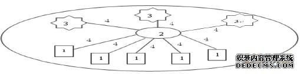

1.引言
互联网建立至今，仅仅几十年的发展光景，但它的发展速度却是任何时代产业技术无法相提并论的。计算机网络的应用已渗透到社会的各领域，随之产生的网络安全问题备受关注。作为网络安全的防火墙技术、入侵检测系统、会话加密、虚拟专用网(VPN)和数字证书等技术都是基于内部网络设计的，然而网络内部的用户却不一定都是合法、安全的，所以网络安全身份认证系统应运而生。网络身份认证是通过一定的技术手段，强制要求用户登录网络时提供有效且惟一的身份信息，身份信息在认证服务器中需进行校验，合法的通过验证，可访问网络资源，不合法的身份信息，将被阻断网络，限制非法用户访问网络资源，并有效地防止数据被修改。
2.网络身份认证系统工作过程
网络身份认证系统其目的是为了有效鉴别身份，防止非法用户访问应用系统资源，是网络安全体系中的第一道屏障。在身份认证系统(如图1)中有四个关键对象，分别为：待认证主机、认证服务器、应用系统服务器、交换网络。

图1 身份认证系统
备注：1是网络中待认证的主机;2是认证服务器;3是应用系统服务器;4是交换网络主机通过网络向认证服务器发出请求，认证服务器查询身份认证信息的真伪，对主机作出应答。当身份认证为真时，开放相应的应用系统;认证失败时，断开网络连接。
3.简单的“用户名/口令”网络身份认证存在的问题
在当前网络环境下，用户名/口令进行身份认证被认为是一种最容易实现的认证方案，该认证手段简单，易行，被广泛的应用于B/S架构下应用账号、邮件系统以及操作系统的登录中。其认证过程简单、速度快、成本低，对网络带宽的要求也不高，优势是显而易见的。
但这种认证方式的安全性比较差，口令明文，不能提供数据的加密传输，很容易被窃听，更不可能实现用户业务行为的不可否认性等。另外普通用户往往愿意使用特殊、有意义的数字及字母来设置口令密码，这样的口令极易破解，一旦口令被恶意破解，用户的身份将在网络中被冒用，既带来了安全隐患，又可能造成经济损失，甚至破解口令者冒用合法用户的身份去做违法的行为。
4.动态口令网络身份认证系统的设计与实现
动态口令的网络身份认证系统是为了解决上述简单用户名、静态口令的缺陷而设计的，其工作原理是用动态口令代替静态口令，在客户端登录过程中加入转换密文，从而得到认证所采用的动态口令。再将动态口令及用户名向认证服务器发出请求，认证服务器接收到用户的认证数据后，以预存的算法去解密，判定认证数据的真假，进而实现对用户身份的认证。
4.1 动态口令网络身份认证的优势
(1)安全性：口令具有一次性，随时间、处理事件等因素的变化口令在不断的变化，具有无法重复使用、口令经过加密算法随机产生，具有无法破解等优点。
(2)方便性：动态口令采用口令卡形式存放，不需要强制记忆口令，所有信息都显示于口令卡之上。
(3)无法否认性：口令是经过登录时间、所需完成业务事件、动态密钥三个元素共同决定的，并通过MD5、HASHAlgorithm生成不可逆的动态口令，有效地解决了电子商务中引发的网络不诚信问题，用户的业务行为具有不可否认性。
4.2 动态口令网络身份认证系统的设计实现
动态口令的网络身份认证系统根据软、硬件划分可由三个部分组成：口令卡;身份认证服务器;认证代理函数接口。(1)动态口令卡。动态口令卡是产生口令的装置，为了携带方便，往往设计的小巧灵便。口令卡内预装了认证服务器端的私钥和客户端的公钥以及MD5或HASH算法，根据认证服务器返回的应答和加密算法以时间为参数来产生一次性动态口令。(2)身份认证服务器。身份认证服务器是网络身份认证系统的核心，它一般存放在网络机房中，用户的所有信息数据经MD5或HASH算法存储于认证服务器中，提供全面的认证、授权、审计服务等。再通过网络二层的DOT1X协议与应用服务器联动，经过身份认证服务器验证，合法的用户再与应用服务器相连，完成相应的业务事件响应。(3)认证代理函数接口。认证代理是软件来实现的，其实就是一些接口函数。认证服务接口函数(API)提供了客户服务器与认证服务器的软件接口，客户服务器通过对它的调用而得到认证服务器提供的认证服务。
5.结束语
动态口令网络身份认证系统实现了动态身份的认证，彻底解决了网络环境下用户身份认证安全与方便的矛盾。动态口令身份认证系统的应用前景乐观，将会在银行、网上购物、电子商务、内部网络身份识别、机要审计等场合得到广泛应用。
| Copyright © 2007-2016 移动互联网专业委员会
版权所有 未经许可网站内容禁止复制、转载，任何人不得擅自使用 |